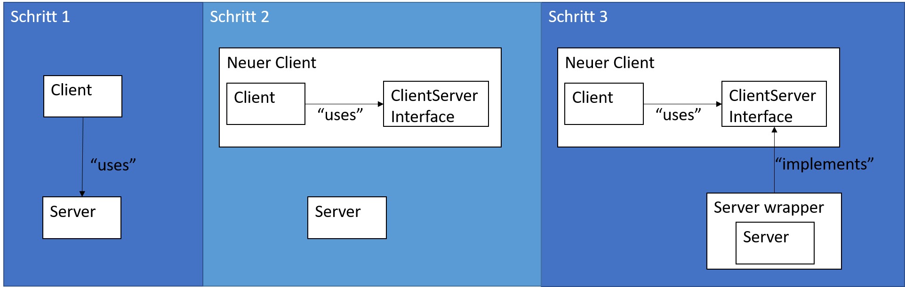

SOLID Prinzipien
Marcel Lüthi
Departement Mathematik und Informatik
Einige Wichtige OO Design Prinzipien (SOLID)
- Single Responsibility Prinzip
- Open closed Prinzip
- Liskovsches Substitutionsprinzip
- Interface Segregation
- Dependency Inversion
Prinzipien zielen auf einfache Änderbarkeit durch Entkopplung der Module ab.
Single responsibility Prinzip
Es sollte nie mehr als einen Grund geben, eine Klasse zu ändern.
– Robert C. Martin: Agile Software Development: Principles, Patterns, and Practices (2002)
- Objekte sollten hohe Kohäsion aufweisen
- Jede Klasse sollte nur für eine Sache verantwortlich sein
- Verwandtes Prinzip: Separations of Concern
Beispiel: Single-responsibililty Prinzip
Verantwortlichkeit:
Kontoführung.
Kontoführung.
class BankAccount {
private double balance;
void deposit(double amount) {
//implementation
}
void withdraw(double amount) {
// implementation
}
boolean checkHasMoney() {
// implementation
}
}
Verantwortlichkeiten: Kontoführung und Berichterstellung.
class BankAccount {
private double balance;
private Format format;
void deposit(double amount) {
//implementation
}
void formatAccountStatement() {
// implementation
}
}
Open-closed Prinzip
Module sollten sowohl offen (für Erweiterungen), als auch geschlossen (für Modifikationen) sein.
- Bertrand Meyer: Object Oriented Software Construction (1988)
- Ermöglicht System um neue Features zu erweitern, ohne ursprünglichen Code zu ändern.
- Minimiert Risiko, dass existierende Funktionalität wegen Änderung nicht mehr funktioniert.
- Mögliche Umsetzung: Vererbung
Beispiel: Open-closed Prinzip
Änderung an Klasse Wordprocessor nötig
class Printer1 {
void print(Document d);
}
class WordProcesser {
...
void printDoc(Printer1 p) {
p.print(document);
}
}
Ursprünglicher Code bleibt unverändert
interface Printer {
void print(Document d);
}
class Printer1 implements Printer {
void print(Document d) {}
}
class Printer2 implements Printer {
void print((Document d) {}
}
class WordProcesser {
void printDoc(Printer p) {
p.print(document);
}
}
Liskovsches Substitutionsprinzip
Sei $\phi(x)$ eine beweisbare Eigenschaft von Objekt $x$ von Typ $T$. Dann soll $\phi(y)$ für Objekte $y$ des Typs $S$ wahr sein, wobei $S$ ein Untertyp von $T$ ist.
B. H. Liskov, J. M. Wing: Behavioral Subtyping Using Invariants and Constraints (1999)
- Jedes Objekt kann durch ein Objekt der Subklasse ersetzt werden, ohne dass sich das Verhalten ändert.
Beispiel: Substitutionsprinzip
class Stack {
private List data = new LinkedList();
void push(Object o) {data.add(o);}
int size() { return data.size(); }
}
class BoundedStack extends Stack {
private Object[] data = new Array[10];
void push(Object o) {
if (data.size() < 10) { data.add(o) }
}
}
void testSize(Stack s) {
int stackSizeBeforePush = s.size();
s.push(o);
assert(stackSizeBeforePush + 1 == s.size())
}
testSize(boundedStack) schlägt fehl.
Interface segregation
Clients sollten nicht dazu gezwungen werden, von Interfaces abzuhängen, die sie nicht verwenden
– Robert C. Martin: The Interface Segregation Principle (1996)
- Kleine Interfaces mit wohldefinierter Funktionalität sind zu bevorzugen
- Anwendung von "Separations of Concerns"
- Klassen werden entkoppelt
- Vergleiche: Sandwiching
Dependency inversion
- Module hoher Ebenen sollten nicht von Modulen niedriger Ebenen abhängen. Beide sollten von Abstraktionen abhängen.
- Abstraktionen sollten nicht von Details abhängen. Details sollten von Abstraktionen abhängen.
– Robert C. Martin: Agile Software Development: Principles, Patterns, and Practices (2002)
Dependency inversion
- Client und Server werden durch Interface entkoppelt
- Interface wird von Client nicht Server vorgegeben.